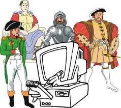

En la sociedad actual las TICs forman parte de la vida cotidiana de las personas, por ello la formación que permite la presencialidad y la virtualidad, es la que más se adecua a los tiempos actuales y genera procesos de aprendizaje óptimos. Ignorar el papel vital que la tecnología juega en el contexto contemporáneo cotidiano de nuestros alumnos impediría que su formación aproveche sus innumerables beneficios
Utilización de tics para la enseñanza de la Historia

La incorporación de las TICs a la Historia permite abrir un campo de acción que favorecerá que los educandos sean más activos, que posean capacidades de trabajar en forma colaborativa, de compartir tareas e ideas, de utilizar diversos materiales didácticos.
Obra publicada con Licencia Creative Commons Reconocimiento Compartir igual 4.0